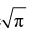
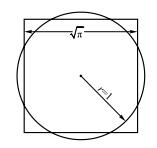
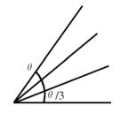

数海拾贝4
古希腊人留下三大著名的几何难题。二倍神坛只是其中之一，另外两个难题，一个是化圆为方，一个是三等分锐角。按照原来的规矩，所有的问题都必须用简单尺规作图的方式完成。
所谓化圆为方，就是找到一个正方形，使它的面积跟给定的圆的面积相等。这实际上是寻找圆周率的平方根

（下图）。
三等分锐角的问题比较容易理解：

这三大难题乍看起来都非常简单，但是严格按照尺规作图的规定来解决却极为困难，最终都被证明是不可能的。无数的后人痴迷于这些难题，他们寻找答案的过程在很大程度上奠定了数学史的发展过程。